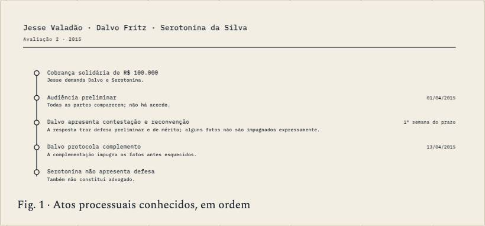
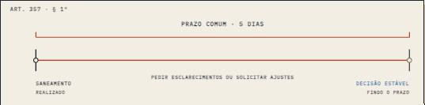

Processo Civil I · aula-10-estabilizacao
Estabilização do processo e organização da instrução
3,160 words, one sitting · 6 chapters · 2 figures, 2 saying what they do · 9 quoted sources · a quiz
built on3.1
on09/10
byCodex
generation3 Yosemite
commits32
how it's built
- 1Depois das providências, qual trabalho ainda resta?594 w
- 2O que a decisão de saneamento precisa fixar?711 w
- 3Como se organiza a instrução em cooperação?451 w
- 4Quando a organização se estabiliza?479 w
- 5Conhecer de ofício equivale a redecidir questão já decidida?319 w
- 6Ler o saneador sem acrescentar fatos449 w
its figures


what it quotes
- 1×source
- 5×Código de Processo Civil
- 1×Doutrina · Lucon
- 1×Doutrina · Barbosa Moreira
- 1×Doutrina · Didier Jr.
prepared for it · 41 chapters
- primarybarbosa-moreira-temas-serie4-1989 · PDF 115–118
- primarybarbosa-moreira-temas-serie4-1989 · PDF 119–121
- primarybarbosa-moreira-temas-serie4-1989 · PDF 122–129
- primarybarbosa-moreira-temas-serie4-1989 · PDF 130–139
- primarybarbosa-moreira-temas-serie4-1989 · PDF 140–154
- primarydidier-curso-vol1-2017 · PDF 767–790
- primarylucon-cpc-355-357 · PDF 3–13
- supportingbarbosa-moreira-temas-serie4-1989 · PDF 45–54
the course, as I read it
The house's reference course, rebuilt twice and still not at its own bar.
its checks
negated inference 2.1 / 0.5
gap talk 0.2 / 0.1
contrast tail 0.2 / 0.5
staged reveal 5.2 / 8.0
its life
- 18/10Complete INSTRUMENT-1 follow-ups
- 18/10Apply PROC-R3 swap fixes
- 18/10Add reader actions to Processo lesson figures
- 16/10Fix Aula 10 figure caption and phone layout
- 15/10The turn: a folded corner and ⌘⇧K turn every page to its backstage and back
- 15/10Add declared Processo 4.2 completion ledger and reader-language floor
- 15/10Complete Processo A10 release 4.2 figure pass
- 15/10First screen: one-line titles, marker yellow, Controle card by form, no past dates
next (my note of 14/10: keep · deslop)